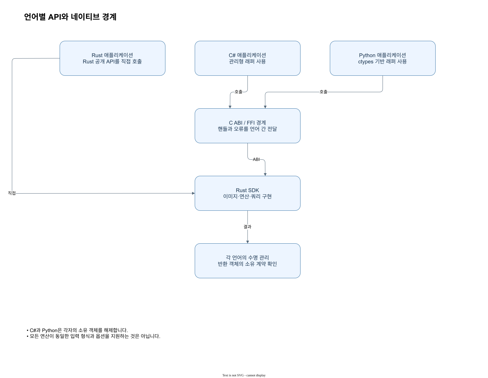

7. 언어마다 동일한 개념, 다른 표현
| 동작 | Rust | C# | Python |
|---|---|---|---|
| 이미지 생성 | ZImage::from_vec_gray8 | ZImage.FromGray8 | ZImage.from_gray8 |
| ROI | image.roi(ZRect) | image.Roi(x,y,w,h) | image.roi(x,y,w,h) |
| 모델 학습 | MatchModel::train_ncc | MatchModel.TrainNcc | MatchModel.train_ncc |
| 결과 읽기 | result.best() | result.Best | result.best |
| 수명 | 컴파일러 소유권/Drop | using/Dispose() | with/close() |

판독 기준
- C#과 Python은 각자의 소유 객체를 해제합니다.
- 모든 연산이 동일한 입력 형식과 옵션을 지원하는 것은 아닙니다.
원리와 입력
세 언어는 영상과 모델, 결과를 구분하는 개념을 공유하지만 생성과 종료를 표현하는 방식이 다릅니다. 표의 Rust from_vec_gray8, C# FromGray8, Python from_gray8은 모두 예제 영상 생성의 출발점이지만 인자 표기와 실패 전달 방식은 각 API 선언을 따라야 합니다. ROI의 사각형 값 또는 개별 정수 인자처럼 호출 모양도 다르므로 하나의 언어 예제를 기계적으로 다른 언어 문법으로 옮기지 마세요.
적용과 확인
결과 검색에서는 Rust의 best(), C#의 Best, Python의 best가 각각 최고 결과가 없을 가능성을 표현합니다. 값을 읽기 전에 비어 있는지 분기하는 것이 공통 흐름입니다. 소유 영상과 모델은 Rust에서 수명이 끝나면 Drop되고, 관리형에서는 using 또는 with와 명시적 해제를 사용합니다. 동일한 개념을 설명하더라도 오버로드, 입력 형식과 기본값은 각 언어 참조의 실제 선언에서 다시 확인하세요.
값과 판독 기준
| 단계 | 입력 또는 결과 | 확인할 점 |
|---|---|---|
| 생성 | from_vec_gray8 / FromGray8 / from_gray8 | 언어별 선언 확인 |
| ROI | ZRect 또는 x,y,w,h | 끝점이 아니라 크기를 전달 |
| 최고 결과 | best() / Best / best | 없음 상태 분기 |
| 정리 | Drop / using / with | 소유 객체의 범위 종료 |
적용할 때 살펴볼 점
같은 세 픽셀 예제를 세 언어로 읽을 때는 문법뿐 아니라 결과 읽기와 정리의 위치를 비교하세요. C#의 using과 Python의 with는 범위를 명시하고 Rust는 소유 값이 범위를 벗어날 때 Drop됩니다. 검색 결과가 비어 있으면 각 언어가 사용하는 없음 표현을 검사합니다. 구체 API의 타입과 오버로드는 각 색인의 선언으로 확인해야 합니다.